Стратегическая инициатива
Оберегая сердцем
Поддержка материнства и семейных ценностей: «Короб для мамы» — набор заботы, который женщина получает в роддоме в первые дни после рождения ребёнка.
Национальное здоровье: профилактика, долголетие и качество жизни
Международная экспертная площадка для развития проектов, инициатив и партнёрств в сфере здоровья, профилактики и здоровьесбережения.
Комитет действует в составе Коалиции здоровья БРИКС — международного центра компетенций в области здоровьесберегающих технологий.
Комитет развивает культуру национального здоровья: через профилактику, просвещение, поддержку семьи, здоровьесберегающие технологии и внедрение традиционных оздоровительных практик в современную систему качества жизни.
Образовательные и просветительские программы для людей разных возрастов: о профилактике, осознанном отношении к телу, психологическом благополучии, питании, движении и повседневных привычках, которые влияют на качество жизни.
ЕЖФ «Здоровье человека — благополучие нации»Нацпроект «Продолжительная и активная жизнь»Программы, направленные на укрепление здоровья детей, подростков, молодых семей и родителей: от раннего просвещения до формирования ответственного отношения к телу, семье, репродуктивному здоровью и среде, в которой растёт ребёнок.
Нацпроект «Семья»Внедрение практик, основанных на культуре, традициях и природных ресурсах народов России, в современную повестку здоровья: профилактика, восстановление, санаторно-курортное направление, телесные практики, режим, питание и бережное отношение к ресурсу человека.
Программы укрепления физического, психологического и социального благополучия семьи: здоровье родителей, детей, старшего поколения, профилактика выгорания, поддержка семейной среды и формирование здоровых привычек внутри дома.
Экспертные проекты в сфере репродуктивного здоровья, женского и мужского здоровья, восстановления после сложных жизненных и медицинских ситуаций, а также просветительские материалы, которые помогают людям вовремя обращаться за поддержкой.
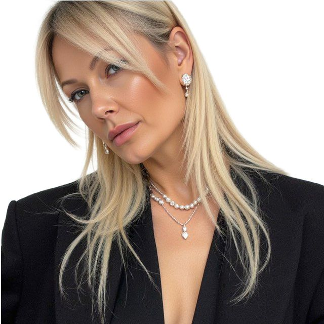
Руководитель Комитета Коалиции здоровья БРИКС по вопросам национального здоровья, здоровьесбережения, поддержки семьи и внедрения традиционных оздоровительных практик в современную систему качества жизни.
«Национальное здоровье — это не только медицина. Это культура жизни, которая формируется в семье, обществе и среде, где человек растёт, работает, восстанавливается и передаёт ценности дальше».
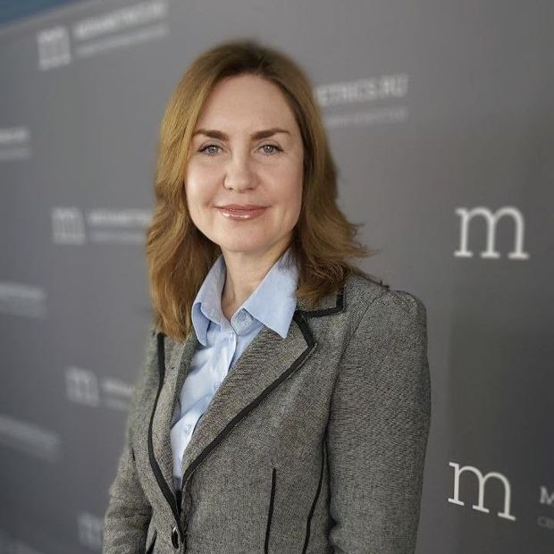
Формирование осознанного отношения к здоровью, регулярным обследованиям, образу жизни, питанию, движению, восстановлению и медицинской грамотности.
Поддержка здоровья детей, подростков, родителей и старшего поколения через просветительские, экспертные и практические программы.
Темы стресса, тревожности, выгорания, эмоционального ресурса, семейного благополучия и восстановления человека в условиях высокой нагрузки.
ИИ в медицине, новые диагностические решения, технологические проекты, персонализированная медицина и цифровые инструменты для профилактики.
Интеграция культурных, природных, санаторно-курортных и оздоровительных практик в современную систему качества жизни и здоровьесбережения.
Обмен опытом между экспертами, организациями, проектами и институтами стран БРИКС и БРИКС+ в сфере здоровья, профилактики, образования и качества жизни.
Текущие и реализуемые проекты Комитета.
Поддержка материнства и семейных ценностей: «Короб для мамы» — набор заботы, который женщина получает в роддоме в первые дни после рождения ребёнка.
Традиционная женская гимнастика и современная медицинская реабилитация в санатории им. М.Ю. Лермонтова (Пятигорск).
Первая бесплатная онлайн-конференция Комитета: 7 дней, 20+ спикеров, более 1000 участниц.
Вторая международная онлайн-конференция: эксперты России и зарубежья, отдельный день ИНВИТРО.
Москва, торгово-промышленная выставка «Уникальная Россия». Тема — поддержка женского здоровья и долголетия традиционными оздоровительными технологиями и их внедрение в систему здравоохранения. Более 100 гостей и спикеров.
Ростов-на-Дону. Форум «БРИКС и бизнес: объединение усилий ради устойчивого будущего» объединил предпринимателей, экспортёров, представителей власти и международных экспертов.
Мы открыты к партнёрству и сотрудничеству
Сегодня недостаточно обсуждать изменения. Важно создавать решения, которые выдерживают время, масштаб и реальность.
Мы готовы к совместной работе там, где формируются новые подходы, новые системы и новое качество взаимодействия с человеком.
Потому что именно это сегодня определяет, каким будет развитие страны и нации дальше.
Для организаций, брендов, фондов, клиник, образовательных и общественных проектов.
Подробнее →Для инициатив, которые могут быть представлены, поддержаны или совместно развиты в рамках Комитета.
Подробнее →Для врачей, психологов, исследователей, представителей науки, образования и бизнеса.
Подробнее →Для партнёров, готовых участвовать в конференциях, круглых столах, медиакампаниях и спецпроектах.
Подробнее →Для СМИ, организаторов мероприятий, международных представителей и институциональных партнёров.
Подробнее →Организации и фонды, которые сотрудничают с Комитетом и поддерживают нашу работу.
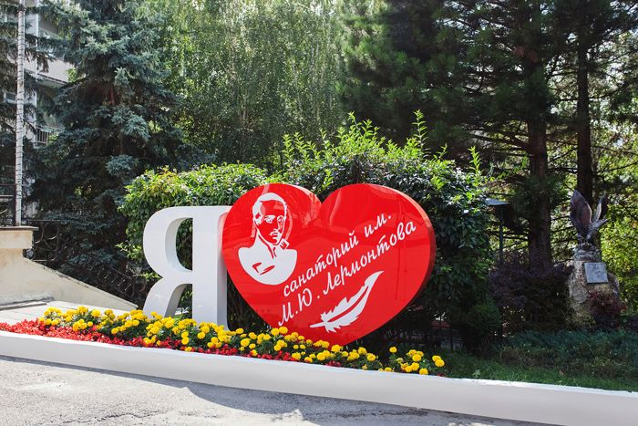
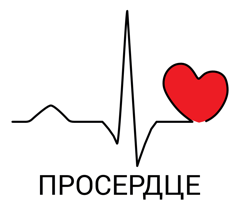
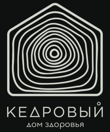
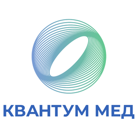
Совет Комитета — эксперты, врачи и общественные деятели в сфере женского здоровья и оздоровительных практик.
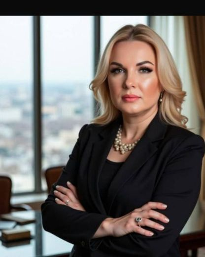
Аккредитованный психолог и психотерапевт, бизнес-консультант, аккредитованный супервизор, преподаватель международного уровня. Действительный член и руководитель регионального отделения Общероссийской профессиональной психотерапевтической лиги (ОППЛ); руководитель регионального отделения Ассоциации специалистов глубинной групповой психологической практики. Организатор образовательных программ, саммитов и форумов, ведущая авторских учебных программ, семинаров и тренингов. Эксперт журналов Forbes, Psychologies и ещё более 60 федеральных СМИ. Автор книги «Зависть: скрытые механизмы и как ими управлять».
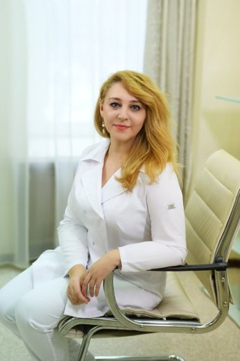
Владелица клиники интегративной медицины «Квантуммед». Врач-терапевт, специалист антиэйдж- и IV-медицины, врач восточной медицины.
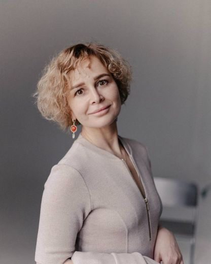
Доктор психологических наук, разработчик психологической модальности «Любящая психология». Основатель Университета безусловной любви с государственной лицензией на образовательную деятельность, создатель метода самопознания «Метагнозис реальности» (авторские права зарегистрированы). Преподаватель кундалини-йоги и медитации, организатор духовных паломничеств. Советник Комитета по стратегическим коммуникациям развития Межрегиональной общественной организации «Московская ассоциация предпринимателей». Участник круглых столов в Государственной Думе по вопросам государственного регулирования психологической деятельности, эксперт федеральных СМИ. Организатор городских Дней йоги под эгидой администрации г. Петропавловска-Камчатского.
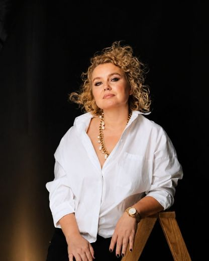
Специалист по психосоматике, магистр психологии, основатель Института психологии здоровья.
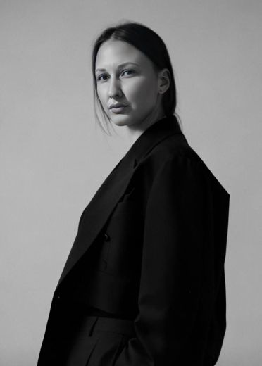
Высшее образование — Российский государственный торгово-экономический университет (РГТЭУ), специальность «Менеджмент организации». Ведический астропсихолог, энергопрактик. Практик метода Access Bars и Body Process школы Access Consciousness, специалист по психосоматике школы PSY 2.0. Специалист по работе с мышлением и телом человека. Работает с женщинами более 17 лет; за плечами тысячи консультаций и изменённых к лучшему женских судеб.
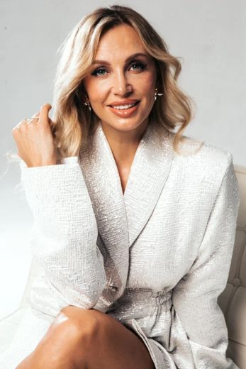
Психолог-консультант, нейрокоуч, специалист по работе с мышлением и психоэмоциональными состояниями. Клинический психолог. Член Совета Комитета коалиции здоровья БРИКС по направлению здравоохранения и женского здоровья. Общественный деятель, эксперт в области психоэмоционального здоровья, женского лидерства и развития человека. Преподаватель Академии «Источник». Лидер сообщества «Катапульта». Организатор просветительских проектов и круглых столов по вопросам психического, эмоционального и репродуктивного здоровья. Более 10 лет изучает психологию человека, сознание и трансформационные методы, объединяя современные психологические подходы, коучинг и практики развития личности.
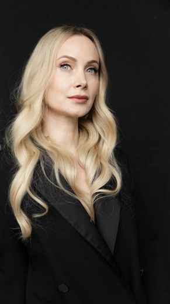
Психолог, коуч, телесный практик. Руководитель направления в системе ментального здоровья «Сигма».
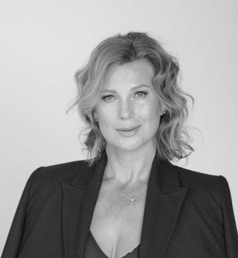
Член Правления, директор по управлению персоналом и административным вопросам ООО «Башкирэнерго». Исполнительный директор Башкирского союза промышленников и предпринимателей по трудовым и социальным вопросам (РСПП).
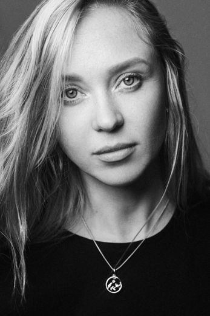
Международный мастер по работе с подсознанием, энергопрактик, преподаватель гимнастики «Берегиния».
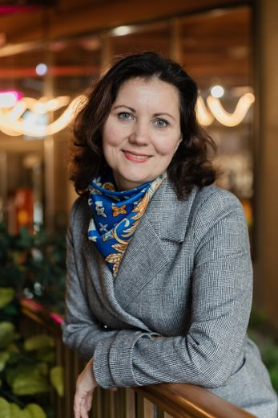
Практикующий психолог, филолог, методолог с 20-летним опытом. Автор образовательной технологии «Речевой нейрофитнес» (авторское право зарегистрировано). Спикер федеральных и региональных конференций. Эксперт по ментальному здоровью, нейропластичности и развитию когнитивных навыков у детей и взрослых.
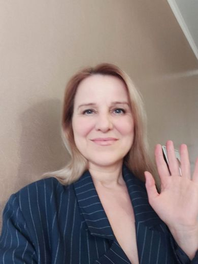
Интегративный психолог, семейный системный психотерапевт, мастер телесно-ориентированных практик, ароматерапевт.
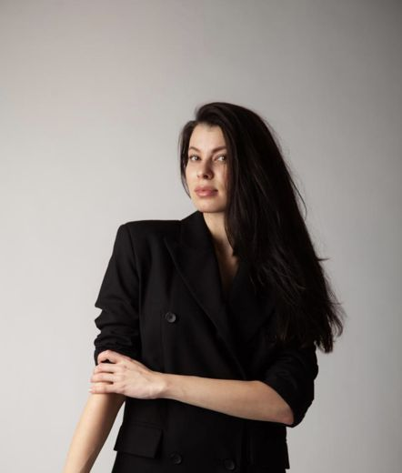
Руководитель направления Wellness и Well-being в Ассоциации Междисциплинарной Медицины; управленческий бизнес-консалтинг в сфере здравоохранения. Агент международного художника-иллюстратора Galia Zinko.
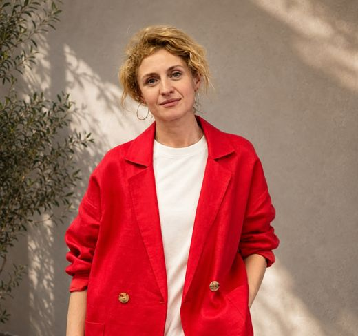
Юрист. Специалист по движению «Пилатес», выпускница международной школы Polestar Pilates, член сообщества «Polestar Юг». Руководитель отрасли «БРИКС Здоровье» Консорциума «БРИКС Ворлд».
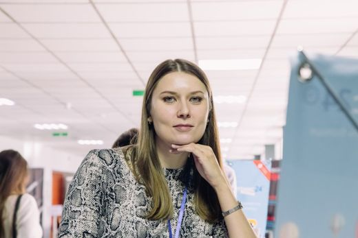
Магистр педагогики по направлению «Психология развития». Профессиональный специалист в сфере интернет-маркетинга. Опытный специалист в сфере продаж и работы с клиентами.
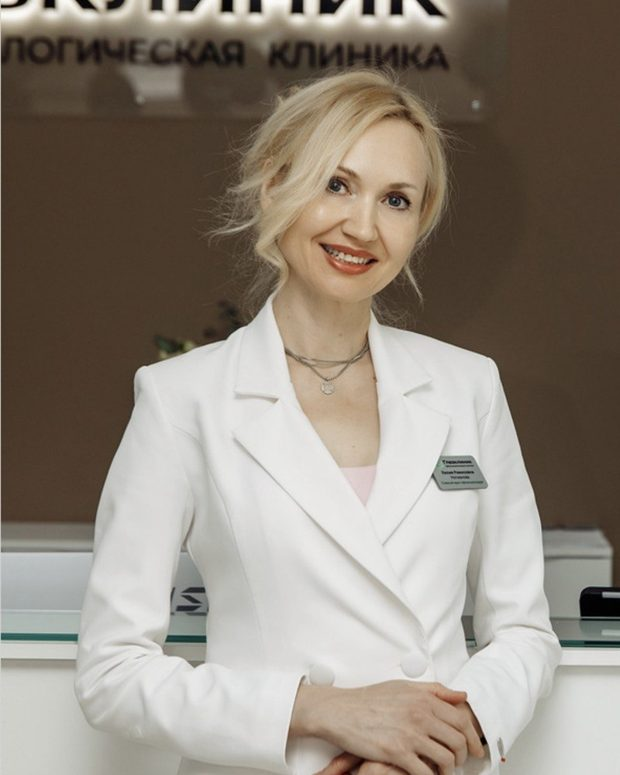
Главный врач офтальмологической клиники «Омикрон», «Глазклиник». Врач высшей категории, офтальмолог, хирург. Специалист по лазерной коррекции зрения, хирургическому лечению катаракты, блефаропластике. Медицинский стаж 21 год, проведено свыше 39 000 операций по лечению глазных заболеваний. Автор проекта «Зоркое зрение».
Анонсы, события и публикации Комитета.
Ростов-на-Дону. Форум Комитета Коалиции здоровья БРИКС в рамках Международного саммита «Женщина в современном мире».
Нью-Дели, Индия. Опубликована итоговая Декларация Нью-Дели. Главные решения саммита — реформа глобального управления, расчёты в национальных валютах, План действий по цепочкам поставок на 2026–2030 годы — и что они значат для бизнеса.
Москва, Московская торгово-промышленная палата. Межотраслевая встреча предпринимателей, экспертов и представителей креативных индустрий. Организаторы — Консорциум «BRICS World» и Комитет Коалиции здоровья БРИКС.
Онлайн. Вторая международная онлайн-конференция Комитета: понятный, доступный и профессиональный разговор о женском здоровье.
Пенза, «ОПОРА РОССИИ». Бизнес, семья и БРИКС: лучшие практики благотворительности и женского лидерства.
Москва, Центр международной торговли. «35 лет СНГ. Развитие Большого Евразийского партнёрства».
Саратов. Совместная инициатива МОО МАП, консорциума «BricsWorld» и Комитета коалиции здоровья BRICS.
Ростов-на-Дону, «ОПОРА РОССИИ». Предприниматели в БРИКС и международное сотрудничество.
Тема: «Поддержка лидерского потенциала: для бизнеса, здравоохранения населения и других современных вызовов. Выходы и влияние для предпринимателей международных рынков БРИКС».
Онлайн. Ведущие врачи, специалисты интегративной медицины и психологи о комплексном подходе к женскому благополучию.
Москва, Финансовый университет. «Мирный атом как инструмент международного сотрудничества: необходимость создания единой платформы для обмена опытом».
Свяжитесь с Комитетом по вопросам партнёрства, участия и сотрудничества.
Приёмная Комитета открыта для вопросов партнёрства, участия и сотрудничества.
Стратегическая инициатива
Во имя материнства. Во благо семьи. Ради будущего поколений.
«Оберегая сердцем» — инициатива Комитета по поддержке материнства и сохранению семейных ценностей. В её основе — вдохновлённая традицией Берегинии философия бережного отношения к женщине в период материнства: благополучие ребёнка начинается с благополучия мамы.
Ключевое решение проекта — набор заботы, который женщина получает в родильном доме в первые дни после рождения ребёнка: косметика и средства ухода, продукция партнёров, информационные материалы по восстановлению, подарки и специальные предложения. Это напоминание каждой маме: о ней тоже важно заботиться.
Оберегая маму сегодня, мы создаём благополучие будущих поколений.
Оздоровительная программа · партнёрский проект
Синтез традиционных русских женских гимнастик и современной медицинской реабилитации.
Программа «Берегиния» объединяет древние русские женские гимнастики, доказавшие эффективность в поддержании здоровья поколений, с современными методами медицинской реабилитации, и направлена на комплексное восстановление женского организма.
Реализуется совместно с санаторием им. М.Ю. Лермонтова в Пятигорске в рамках работы Комитета здоровья БРИКС.
Объединить санаторное восстановление и глубокую женскую оздоровительную практику в единую программу поддержки здоровья и качества жизни.
Онлайн-конференция · 25 февраля – 2 марта 2026
Первая бесплатная онлайн-конференция Комитета.
За 7 дней участницы получили знания от более чем 20 спикеров — врачей, психологов, специалистов интегративной и превентивной медицины, экспертов в области репродуктивного и ментального здоровья, представителей международного сообщества. Конференцию посетили свыше 1000 человек: женщины разных возрастов, матери и будущие мамы, врачи и специалисты помогающих профессий.
Женское здоровье — не фрагменты, а единая система: тело, психика, репродуктивное здоровье, питание, образ жизни и профилактика.
II онлайн-конференция · 19–22 мая 2026
Вторая международная бесплатная онлайн-конференция Комитета.
За 4 дня более 10 спикеров — врачи, психологи, нутрициологи, юристы, специалисты по диагностике и женскому здоровью; отдельный день провели врачи ИНВИТРО. Международный состав участников расширил повестку за пределы национального контекста.
Профилактика, доступная диагностика, материнство и качество жизни — общая международная повестка стран БРИКС и партнёрских государств.
Круглый стол · 1 февраля 2026 · Москва
Торгово-промышленная выставка «Уникальная Россия».
Круглый стол был посвящён поддержке женского здоровья и продолжительности жизни с помощью традиционных оздоровительных технологий и их внедрения в систему здравоохранения. На мероприятии присутствовали врачи, клинические и практические психологи, исследователи, представители превентивной и интегративной медицины, специалисты по репродуктивному и ментальному здоровью, а также более 100 гостей и спикеров.
Особую ценность встрече придало присутствие почётных гостей президиума, формирующих научную, медицинскую и социальную повестку.
В рамках темы круглого стола высказался и каждый из членов комитета коалиции здоровья БРИКС.
«Данный стол — про здоровье женщин России, а также обмен опытом традиционных технологий в международном формате», — заявила исполнительный директор Консорциума «BRICS World», руководитель комитета коалиции здоровья БРИКС Юлия Васильевна Лебедева.
Международный форум ВЭД · 29 мая 2026 · Ростов-на-Дону
Международный форум внешнеэкономической деятельности.
Форум объединил предпринимателей, экспортёров, представителей власти, институтов развития и международных экспертов из стран БРИКС, СНГ, Китая, Индии и государств Персидского залива.
Онлайн-конференция · 19–22 мая 2026
Понятный, доступный и при этом профессиональный разговор о женском здоровье.
Перед конференцией стояла большая задача — сделать разговор о женском здоровье понятным и доступным, чтобы женщина могла услышать не общие советы, а мнение врачей, психологов, юристов, экспертов по диагностике и специалистов международного уровня, и чтобы путь от вопроса «что со мной происходит?» до грамотной информации стал короче.
Поэтому в программе прозвучали темы для разного уровня погружения — для женщин, мам, будущих мам, девушек, которые хотят лучше понимать своё тело, и для специалистов, которым важен широкий взгляд на женское здоровье.
Расширенное заседание · 13 мая 2026 · Пенза
Бизнес, семья и БРИКС: лучшие практики благотворительности и женского лидерства.
13 мая 2026 года во втором корпусе Пензенского государственного краеведческого музея состоялось открытое расширенное заседание Комитета по развитию женского предпринимательства Пензенского регионального отделения «ОПОРЫ РОССИИ». Центральная тема — «Успешные практики благотворительной деятельности в отношении семьи и здоровья региональных общественных организаций и бизнеса».
Мероприятие объединило представителей бизнеса, общественных деятелей, экспертов в области здравоохранения и делегатов Коалиции БРИКС из Москвы.
«Здоровье и семья — это фундамент общества. Наша цель — создать среду, где бизнес и общественные организации смогут эффективно сотрудничать ради благополучия жителей региона», — отмечают организаторы.
XVII Международный экономический форум СНГ · 3 апреля 2026 · Москва
2026 год объявлен Годом охраны здоровья.
3 апреля 2026 года в Москве, в Центре международной торговли, начал работу XVII Международный экономический форум государств — участников СНГ. Событие приурочено к 35-летию Содружества и посвящено стратегическому развитию Большого Евразийского партнёрства.
Особый статус мероприятию придаёт тематический фокус: согласно решению Совета глав государств СНГ, 2026 год объявлен Годом охраны здоровья. Эта инициатива стала смысловым центром форума.
Ежегодно объединяя более 2000 участников — представителей правительств, бизнеса, экспертного сообщества и международных организаций, — за 17 лет форум превратился из деловой площадки в пространство гуманитарного и технологического диалога.
«Сегодня здоровье — это не только медицина. Это вопрос безопасности, экологии, кадрового потенциала и внедрения передовых технологий. Мы обсуждаем будущее, в котором сохранение благополучия человека становится главным драйвером экономического роста в странах Содружества», — отмечают организаторы.
Круглый стол · 25 марта 2026 · Саратов
Инициатива Комитета по стратегическому развитию МОО МАП, консорциума «BricsWorld» и Комитета коалиции здоровья «BRICS».
Заседание объединило экспертизу трёх ключевых направлений — ВЭД, здравоохранение и женское предпринимательство. В дискуссии приняли участие эксперты, общественные деятели и представители органов власти регионов РФ и стран БРИКС.
Заседание Комитета по ВЭД · 18 марта 2026 · Ростов-на-Дону
Поддержка лидерского потенциала для бизнеса, здравоохранения и современных вызовов.
Состоялось расширенное заседание Комитета по внешнеэкономической деятельности (ВЭД). Мероприятие организовано по инициативе Комитета Коалиции БРИКС в партнёрстве с Ростовским областным отделением «ОПОРЫ РОССИИ».
В условиях глобальной трансформации рынков взаимодействие в рамках БРИКС становится ключевым драйвером для российского бизнеса. Заседание объединило экспертизу трёх профильных комитетов — по ВЭД, здравоохранению и женскому предпринимательству.
В дискуссии приняли участие представители министерств и ведомств регионов РФ и стран БРИКС, ведущие эксперты и общественные деятели.
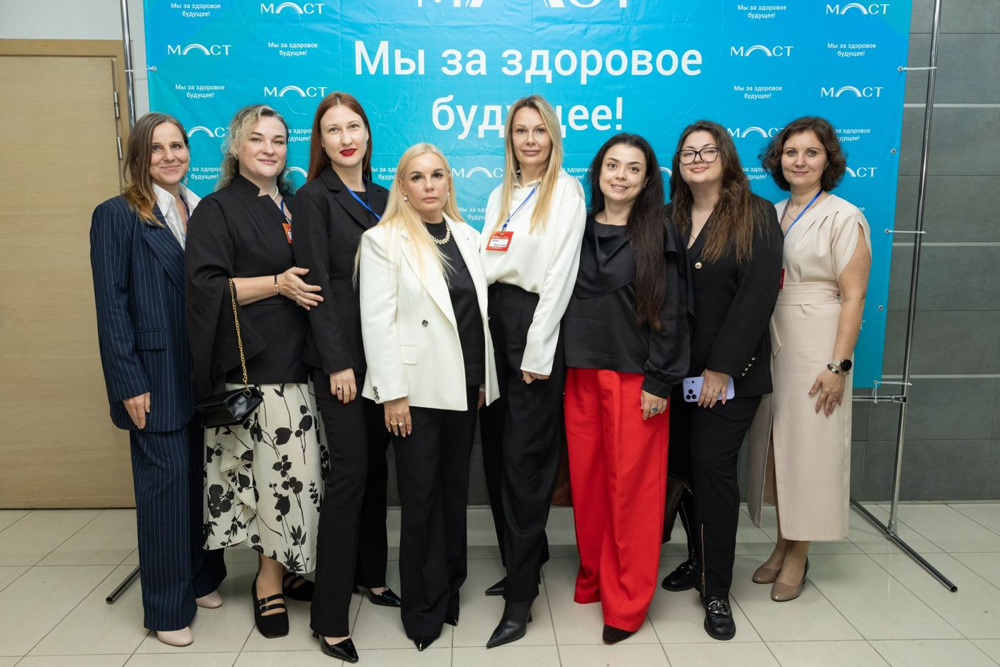
Форум · 17 октября 2026 · Ростов-на-Дону
17 октября в Ростове-на-Дону в рамках Международного саммита «Женщина в современном мире» состоялся форум Комитета Коалиции здоровья БРИКС и Комитета «Психология и Образование» Консорциума Ворлд БРИКС Московской Ассоциации Предпринимателей.
От вопросов женского выбора и участия в общественной жизни до поддержки материнства, психологического здоровья и применения искусственного интеллекта — программа объединила темы, от которых сегодня зависят качество жизни и возможности современной женщины.
Организаторами форума выступили Татьяна Озерова, Юлия Лебедева.
Программа объединила пленарные дискуссии о женском выборе, экономических возможностях и участии женщин в общественных процессах.
Юлия Лебедева, руководитель Комитета Коалиции здоровья БРИКС и бизнес-амбассадор МОО «Московская ассоциация предпринимателей», выступила модератором дискуссии «Женщина и власть: от представительства к влиянию».
Во второй части форума эксперты Комитета представили свои направления работы:
Дискуссии модерировали Анастасия Жильцова, Марина Конышева.
Мы продолжаем развивать повестку, в которой здоровье женщины рассматривается в связи с её возможностями, профессиональной реализацией, семьёй и участием в жизни общества.
Благодарим наших коллег, спикеров и участников за содержательный диалог и новые знакомства!
📍 Ростов-на-Дону | 17 октября 2026 года
Репортаж · 12–13 сентября 2026 · Нью-Дели, Индия
Тема года — «Укрепление устойчивости, инновации, сотрудничество и стабильность».
Коллеги, 12–13 сентября 2026 года в Нью-Дели прошёл XVIII саммит БРИКС. Только что опубликована итоговая Декларация Нью-Дели, и я хочу поделиться главными моментами, которые важны для нашего бизнеса и всего Консорциума «BRICS World». Совсем скоро мы формируем делегацию в Индию — 4–5 декабря 2026 года.
Консорциум «BRICS World» видит в этих решениях мощный импульс для развития деловых связей, совместных проектов и выхода на новые рынки. Расширение БРИКС, институциональное развитие и нацеленность на практические результаты — это именно то, что нужно бизнесу.
Отдельно приветствую председательство Индии и благодарю за гостеприимство. Уже с нетерпением ждём XIX саммита в Китае в 2027 году. Работаем дальше!
Круглый стол · 3 сентября 2026 · Москва
Московская торгово-промышленная палата. Организаторы — Консорциум «BRICS World» и Комитет Коалиции здоровья БРИКС.
3 сентября 2026 года в Московской торгово-промышленной палате состоялся круглый стол «Креативная экономика России: от таланта к индустрии». Встреча объединила предпринимателей, экспертов, представителей креативных индустрий, образования, медиа, дизайна, IT и других профессиональных направлений.
Модератором и организатором встречи стала Лебедева Юлия Васильевна, руководитель Комитета Коалиции здоровья БРИКС по вопросам поддержки здоровья и продолжительности жизни населения, исполнительный директор Консорциума «BRICS World».
Главной особенностью встречи стал межотраслевой формат. За одним столом объединились специалисты, работающие с разными составляющими современной креативной экономики: от образования и государственной поддержки до fashion, дизайна и архитектуры, медиа, PR, интеллектуальной собственности, IT и искусственного интеллекта.
Одной из ключевых тем стала государственная поддержка креативных индустрий — в частности, вопросы включения бизнеса в реестр субъектов креативных индустрий, существующие меры поддержки и возможности использования государственных инструментов для развития проектов.
Также в обсуждении приняли участие Мухамедьярова Динара Тагировна, ландшафтный дизайнер и основатель дизайн-студии, Безус Наталья Владимировна, доктор психологических наук, основатель Университета безусловной любви, Шарафутдинова Влада Владимировна, предприниматель и эксперт по экономике впечатлений и мультисенсорному маркетингу, и Азенова Айжан Жанбырбаевна, руководитель юридической компании «Правовой Стандарт», основатель благотворительного фонда «Маленькие сердца», руководитель Комитета по экономической и юридической безопасности бизнеса Консорциума «BRICS World» при МАП.
Поддержку круглому столу оказали российские проекты «Кипеньский Гриб» и MUSMUS.
Благодарим партнёров за поддержку встречи и вклад в создание пространства, где предприниматели, эксперты и представители креативных индустрий могут знакомиться, обмениваться опытом и находить новые возможности для сотрудничества.
Круглый стол показал, что современная креативная экономика объединяет гораздо больше направлений, чем традиционно принято относить к сфере творчества. Дизайн, fashion, архитектура, образование, медиа, IT и AI, интеллектуальная собственность, маркетинг, психология и экономика впечатлений сегодня всё чаще пересекаются, формируя новые бизнес-модели и профессиональные сообщества.
Именно в таком межотраслевом взаимодействии появляются новые идеи, партнёрства и проекты, способные перейти от индивидуального таланта к устойчивой индустрии.
Организаторы благодарят всех спикеров, гостей и партнёров за участие в круглом столе и содержательный профессиональный диалог.
📍 3 сентября 2026 года · Московская торгово-промышленная палата · Москва, ул. Петровка, д. 15, стр. 1
Практическая онлайн-конференция · 25 февраля – 2 марта 2026
Комплексный подход к женскому благополучию.
Событие объединило на одной цифровой площадке ведущих врачей, специалистов интегративной медицины, психологов и экспертов мирового уровня для обсуждения комплексного подхода к женскому благополучию.
Цель конференции — дать женщинам доступ к экспертным знаниям о здоровье, долголетии и психологической устойчивости. Программа охватывает ключевые аспекты: от физиологического здоровья и профилактики до работы с внутренним состоянием и поиска ресурсов для полноценной жизни.
«Это событие стало реальной поддержкой для каждой женщины. Мы собрали экспертов, которые смотрят на здоровье системно, объединяя классическую науку и современные интегративные методики».